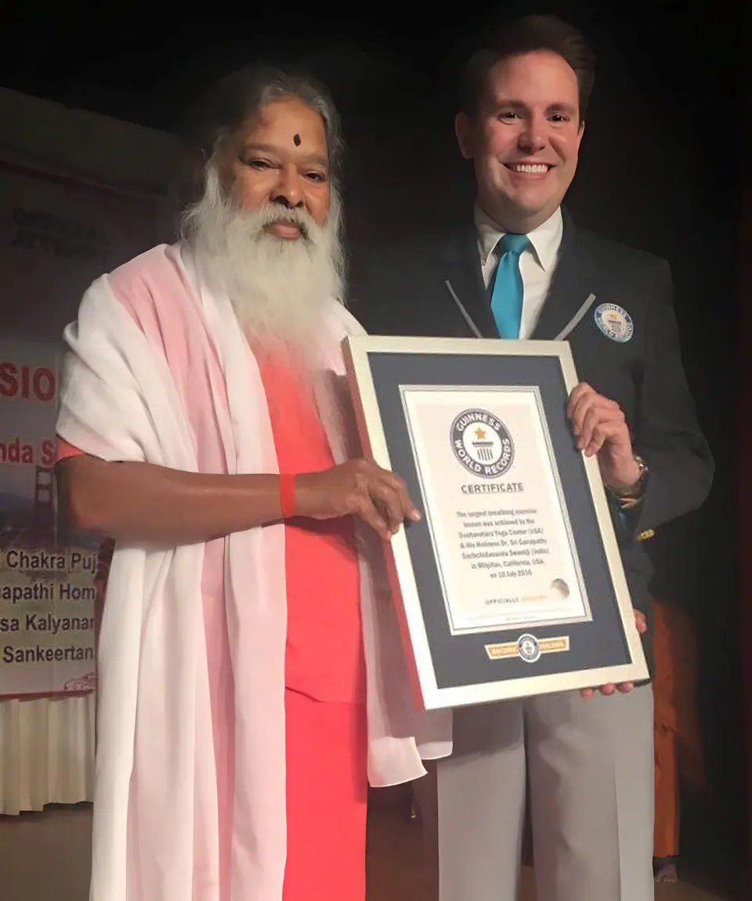

ಗಿನ್ನೆಸ್ ವಿಶ್ವ ದಾಖಲೆ · 10 ಜುಲೈ 2016
ಅತಿ ದೊಡ್ಡ ಉಸಿರಾಟದ ಪಾಠ
ಅಮೆರಿಕದ ಕ್ಯಾಲಿಫೋರ್ನಿಯಾದ ಮಿಲ್ಪಿಟಾಸ್ನಲ್ಲಿರುವ ಇಂಡಿಯಾ ಕಮ್ಯುನಿಟಿ ಸೆಂಟರ್ನಲ್ಲಿ, ದಶಾವತಾರ ಯೋಗ ಸೆಂಟರ್ (ಅಮೆರಿಕ) ಆಯೋಜಿಸಿದ್ದ ಕಾರ್ಯಕ್ರಮದಲ್ಲಿ, ಒಂದೇ ಸ್ಥಳದಲ್ಲಿ ನಡೆದ ಅತಿ ದೊಡ್ಡ ಪ್ರಾಣಾಯಾಮ (ಉಸಿರಾಟದ ವ್ಯಾಯಾಮ) ಪಾಠವನ್ನು ಶ್ರೀ ಸ್ವಾಮೀಜಿಯವರು ನಡೆಸಿಕೊಟ್ಟರು.
ಒತ್ತಡವನ್ನು ಕಡಿಮೆ ಮಾಡುವಲ್ಲಿ ಮತ್ತು ಆರೋಗ್ಯವನ್ನು ಸುಧಾರಿಸುವಲ್ಲಿ ಉಸಿರಾಟದ ಪಾತ್ರವನ್ನು ಅವರು ವಿವರಿಸಿದರು: ನರಗಳು, ನರಕೇಂದ್ರಗಳು ಮತ್ತು ಉಸಿರಾಟದ ಕ್ರಮಗಳ ನಡುವಿನ ಸಂಬಂಧ, ನಿರಂತರ ಏಕಾಗ್ರತೆಯೊಂದಿಗೆ ದೀರ್ಘ ಉಸಿರಿನ ಮಹತ್ವ, ಮತ್ತು ವ್ಯವಸ್ಥಿತ ಉಸಿರಾಟವು ಕಾಯಿಲೆಗಳು ಹಾಗೂ ಜೀವನಶೈಲಿ ರೋಗಗಳಲ್ಲಿ ಹೇಗೆ ನೆರವಾಗುತ್ತದೆ ಎಂಬುದನ್ನು.
ಶ್ರೀ ಸ್ವಾಮೀಜಿಯವರು ಹಲವಾರು ದಶಕಗಳಿಂದ ಮುದ್ರೆಗಳು, ಕ್ರಿಯೆಗಳು ಮತ್ತು ನಾಡಿ ಶುದ್ಧಿ ವ್ಯಾಯಾಮಗಳ ಕುರಿತು ಪ್ರಯೋಗಗಳನ್ನು ನಡೆಸಿದ್ದಾರೆ; ಪ್ರಾಣಾಯಾಮದ ಕುರಿತಾದ ಅವರ ವೈಜ್ಞಾನಿಕ ದೃಷ್ಟಿಕೋನವು ವಿಶ್ವದಾದ್ಯಂತ ದಶಲಕ್ಷಾಂತರ ಜನರಿಗೆ ಪ್ರಯೋಜನವನ್ನುಂಟುಮಾಡಿದೆ.